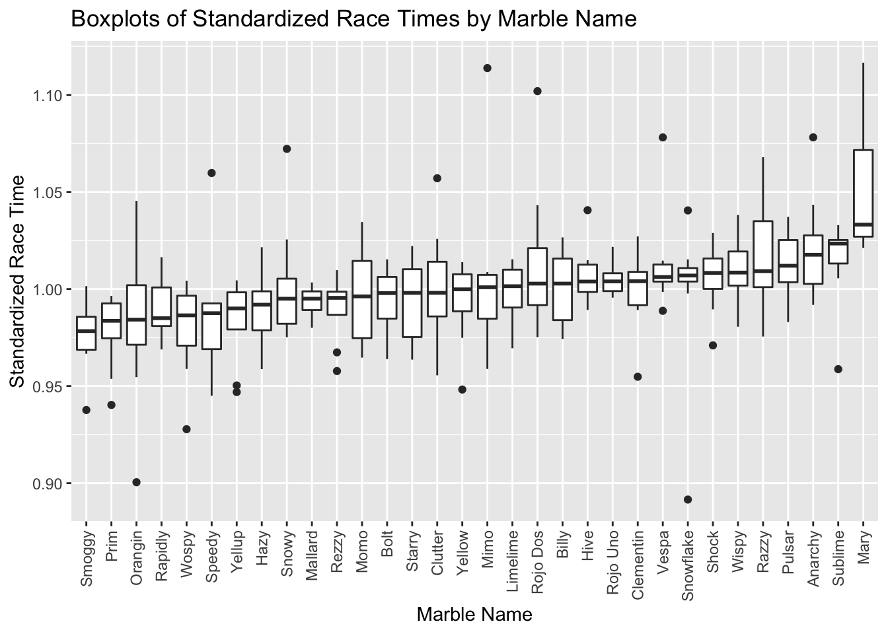
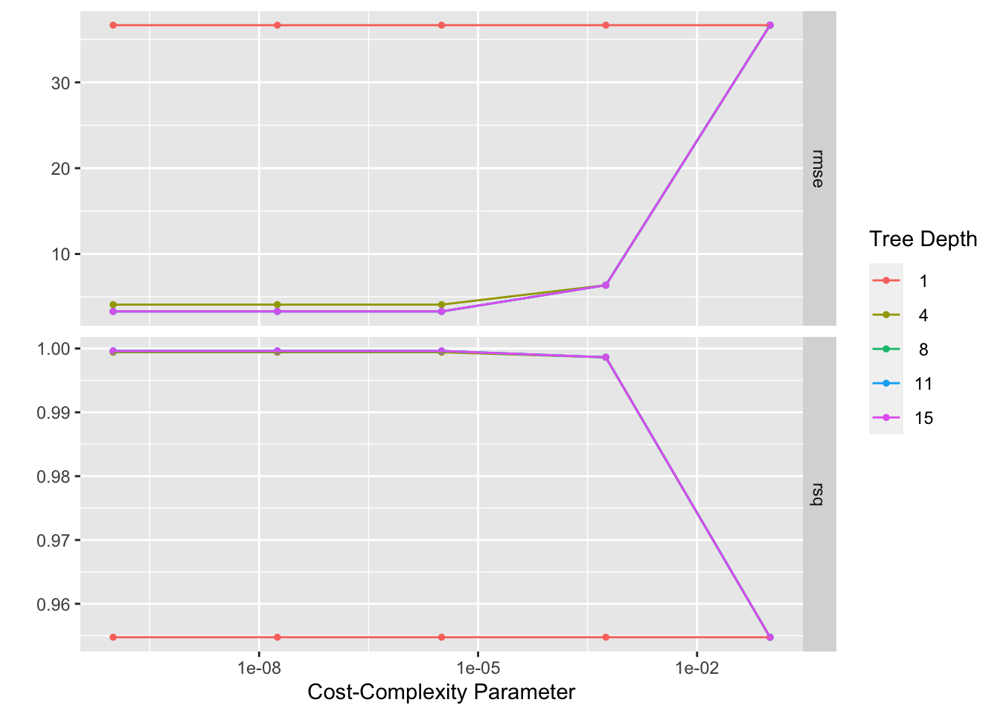
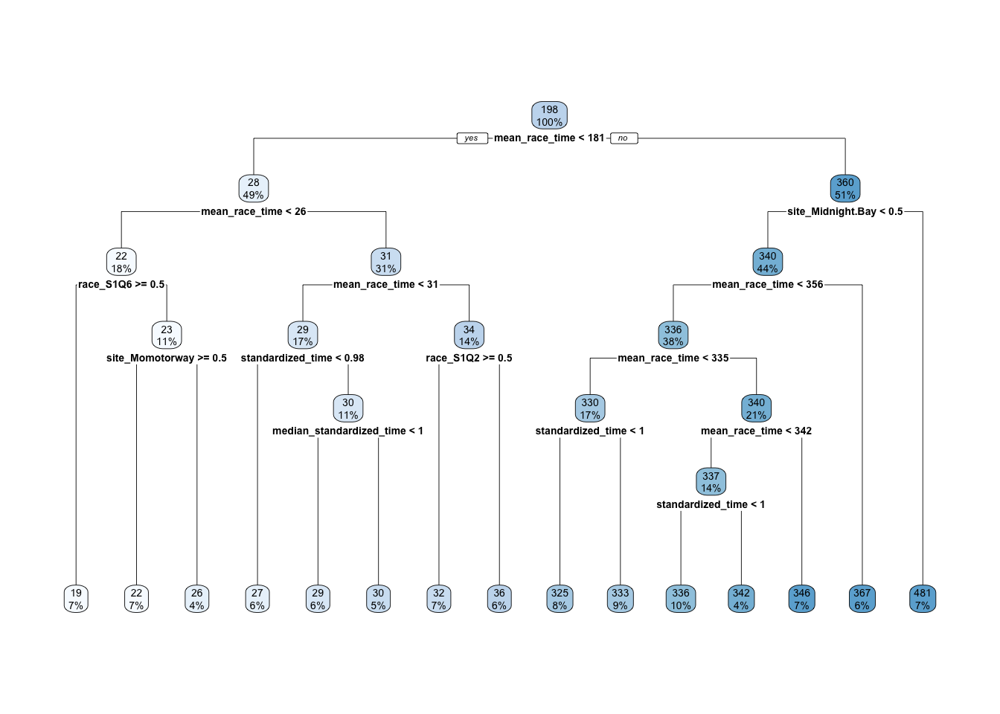
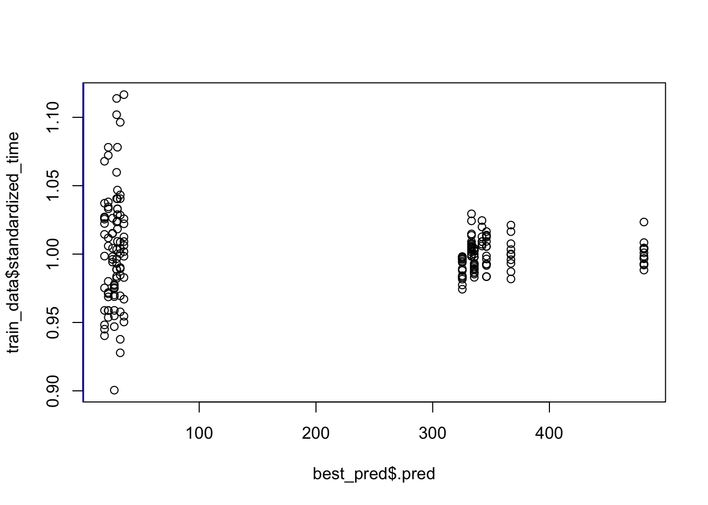
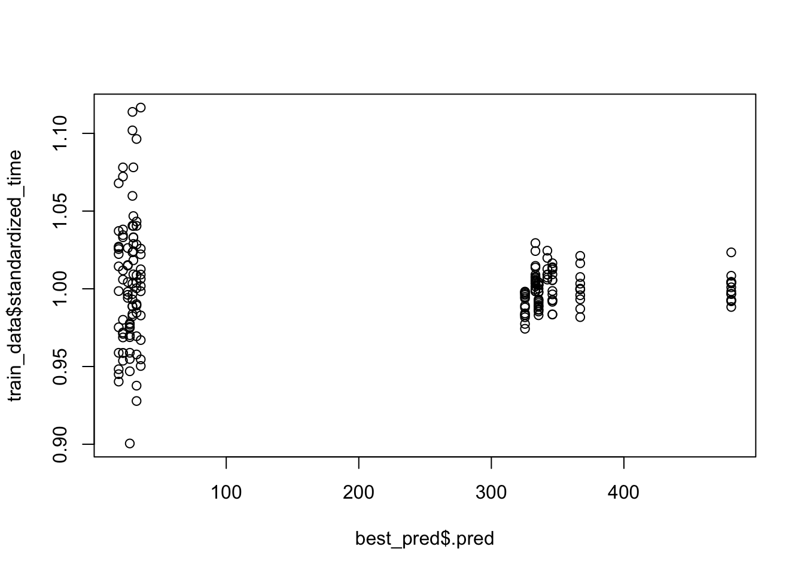

#Packages Load
library(readr)
library(here)
library(tidyverse)
library(skimr)
library(rsample)
library(recipes)
library(rpart)
library(parsnip)
library(doParallel) # for parallel computing
library(workflows)
library(dials)
library(dplyr)
library(tune)
library(rpart.plot)
library(broom.mixed)
library(ggplot2)#Data Import
## Rows: 256 Columns: 14## ── Column specification ────────────────────────────────────────────────────────
## Delimiter: ","
## chr (9): date, race, site, source, marble_name, team_name, pole, host, notes
## dbl (5): time_s, points, track_length_m, number_laps, avg_time_lap##
## ℹ Use `spec()` to retrieve the full column specification for this data.
## ℹ Specify the column types or set `show_col_types = FALSE` to quiet this message.#Exploration
## Rows: 256
## Columns: 14
## $ date <chr> "15-Feb-20", "15-Feb-20", "15-Feb-20", "15-Feb-20", "15…
## $ race <chr> "S1Q1", "S1Q1", "S1Q1", "S1Q1", "S1Q1", "S1Q1", "S1Q1",…
## $ site <chr> "Savage Speedway", "Savage Speedway", "Savage Speedway"…
## $ source <chr> "https://youtu.be/JtsQ_UydjEI?t=356", "https://youtu.be…
## $ marble_name <chr> "Clementin", "Starry", "Momo", "Yellow", "Snowy", "Razz…
## $ team_name <chr> "O'rangers", "Team Galactic", "Team Momo", "Mellow Yell…
## $ time_s <dbl> 28.11, 28.37, 28.40, 28.70, 28.71, 28.72, 28.96, 29.11,…
## $ pole <chr> "P1", "P2", "P3", "P4", "P5", "P6", "P7", "P8", "P9", "…
## $ points <dbl> NA, NA, NA, NA, NA, NA, NA, NA, NA, NA, NA, NA, NA, NA,…
## $ track_length_m <dbl> 12.81, 12.81, 12.81, 12.81, 12.81, 12.81, 12.81, 12.81,…
## $ number_laps <dbl> 1, 1, 1, 1, 1, 1, 1, 1, 1, 1, 1, 1, 1, 1, 1, 1, 10, 10,…
## $ avg_time_lap <dbl> 28.11, 28.37, 28.40, 28.70, 28.71, 28.72, 28.96, 29.11,…
## $ host <chr> "No", "No", "No", "No", "No", "No", "No", "No", "No", "…
## $ notes <chr> NA, NA, NA, NA, NA, NA, NA, NA, NA, NA, NA, NA, NA, NA,…| Name | marbles |
| Number of rows | 256 |
| Number of columns | 14 |
| _______________________ | |
| Column type frequency: | |
| character | 9 |
| numeric | 5 |
| ________________________ | |
| Group variables | None |
Variable type: character
| skim_variable | n_missing | complete_rate | min | max | empty | n_unique | whitespace |
|---|---|---|---|---|---|---|---|
| date | 0 | 1.00 | 8 | 9 | 0 | 16 | 0 |
| race | 0 | 1.00 | 4 | 4 | 0 | 16 | 0 |
| site | 0 | 1.00 | 7 | 15 | 0 | 8 | 0 |
| source | 0 | 1.00 | 34 | 34 | 0 | 16 | 0 |
| marble_name | 0 | 1.00 | 4 | 9 | 0 | 32 | 0 |
| team_name | 0 | 1.00 | 6 | 16 | 0 | 16 | 0 |
| pole | 128 | 0.50 | 2 | 3 | 0 | 16 | 0 |
| host | 0 | 1.00 | 2 | 3 | 0 | 2 | 0 |
| notes | 249 | 0.03 | 37 | 100 | 0 | 7 | 0 |
Variable type: numeric
| skim_variable | n_missing | complete_rate | mean | sd | p0 | p25 | p50 | p75 | p100 | hist |
|---|---|---|---|---|---|---|---|---|---|---|
| time_s | 3 | 0.99 | 190.84 | 169.13 | 17.76 | 28.40 | 36.28 | 338.16 | 492.01 | ▇▁▁▇▁ |
| points | 128 | 0.50 | 6.45 | 7.74 | 0.00 | 0.00 | 3.00 | 11.25 | 26.00 | ▇▂▂▁▁ |
| track_length_m | 0 | 1.00 | 13.22 | 0.95 | 11.90 | 12.62 | 13.02 | 14.13 | 14.55 | ▅▅▂▁▇ |
| number_laps | 0 | 1.00 | 6.25 | 5.53 | 1.00 | 1.00 | 5.00 | 10.25 | 16.00 | ▇▁▃▂▂ |
| avg_time_lap | 3 | 0.99 | 29.70 | 5.55 | 17.76 | 25.94 | 30.05 | 33.65 | 41.62 | ▃▆▇▇▂ |
select_data = marbles %>% select(c(race, site,marble_name,team_name,time_s,track_length_m,number_laps,avg_time_lap))
marbles_updated = select_data %>% drop_na()
marbles_updated$track_length_m = as.factor(marbles_updated$track_length_m)
marbles_updated$number_laps = as.factor(marbles_updated$number_laps)
marbles_updated$avg_time_lap = as.factor(marbles_updated$avg_time_lap)## Rows: 253
## Columns: 8
## $ race <chr> "S1Q1", "S1Q1", "S1Q1", "S1Q1", "S1Q1", "S1Q1", "S1Q1",…
## $ site <chr> "Savage Speedway", "Savage Speedway", "Savage Speedway"…
## $ marble_name <chr> "Clementin", "Starry", "Momo", "Yellow", "Snowy", "Razz…
## $ team_name <chr> "O'rangers", "Team Galactic", "Team Momo", "Mellow Yell…
## $ time_s <dbl> 28.11, 28.37, 28.40, 28.70, 28.71, 28.72, 28.96, 29.11,…
## $ track_length_m <fct> 12.81, 12.81, 12.81, 12.81, 12.81, 12.81, 12.81, 12.81,…
## $ number_laps <fct> 1, 1, 1, 1, 1, 1, 1, 1, 1, 1, 1, 1, 1, 1, 1, 1, 10, 10,…
## $ avg_time_lap <fct> 28.11, 28.37, 28.4, 28.7, 28.71, 28.72, 28.96, 29.11, 2…#calculating average time by race and saving as a new df
avg_race_times <- marbles_updated %>% group_by(race) %>%
summarize(mean_race_time = mean(time_s, na.rm=TRUE))#Divide each marble's race time by average time/race
marbles_cleaned <- marbles_cleaned %>% mutate(standardized_time = time_s/mean_race_time)#Get median standaridized time per marble across races to order boxplots
new_data <- marbles_cleaned %>%
group_by(marble_name) %>%
summarize(median_standardized_time = median(standardized_time, na.rm=TRUE))## Joining, by = "marble_name"## Rows: 253
## Columns: 11
## $ race <chr> "S1Q1", "S1Q1", "S1Q1", "S1Q1", "S1Q1", "S1Q1…
## $ site <chr> "Savage Speedway", "Savage Speedway", "Savage…
## $ marble_name <chr> "Clementin", "Starry", "Momo", "Yellow", "Sno…
## $ team_name <chr> "O'rangers", "Team Galactic", "Team Momo", "M…
## $ time_s <dbl> 28.11, 28.37, 28.40, 28.70, 28.71, 28.72, 28.…
## $ track_length_m <fct> 12.81, 12.81, 12.81, 12.81, 12.81, 12.81, 12.…
## $ number_laps <fct> 1, 1, 1, 1, 1, 1, 1, 1, 1, 1, 1, 1, 1, 1, 1, …
## $ avg_time_lap <fct> 28.11, 28.37, 28.4, 28.7, 28.71, 28.72, 28.96…
## $ mean_race_time <dbl> 29.4400, 29.4400, 29.4400, 29.4400, 29.4400, …
## $ standardized_time <dbl> 0.9548234, 0.9636549, 0.9646739, 0.9748641, 0…
## $ median_standardized_time <dbl> 1.0040201, 0.9980154, 0.9962279, 0.9998530, 0…# boxplots of standardized times by marble
ggplot(marbles_new, aes(x=reorder(marble_name, median_standardized_time ), y=standardized_time)) + geom_boxplot() + labs(title= "Boxplots of Standardized Race Times by Marble Name") + xlab("Marble Name") + ylab("Standardized Race Time") +
theme(axis.text.x = element_text(angle = 90, vjust = 0.5, hjust=1))
#ML workflow
# Create data frames for the two sets:
train_data <- training(data_split)
test_data <- testing(data_split)## # 5-fold cross-validation repeated 5 times using stratification
## # A tibble: 25 × 3
## splits id id2
## <list> <chr> <chr>
## 1 <split [147/42]> Repeat1 Fold1
## 2 <split [148/41]> Repeat1 Fold2
## 3 <split [151/38]> Repeat1 Fold3
## 4 <split [155/34]> Repeat1 Fold4
## 5 <split [155/34]> Repeat1 Fold5
## 6 <split [147/42]> Repeat2 Fold1
## 7 <split [148/41]> Repeat2 Fold2
## 8 <split [151/38]> Repeat2 Fold3
## 9 <split [155/34]> Repeat2 Fold4
## 10 <split [155/34]> Repeat2 Fold5
## # … with 15 more rows#Model 1: Decision Tree Model #run parallels to determine number of cores
## [1] 7cl <- makeCluster(cores)
registerDoParallel(cl)
#define the tree model
tune_spec <-
decision_tree(
cost_complexity = tune(),
tree_depth = tune()
) %>%
set_engine("rpart") %>%
set_mode("regression")
tune_spec## Decision Tree Model Specification (regression)
##
## Main Arguments:
## cost_complexity = tune()
## tree_depth = tune()
##
## Computational engine: rpart#define workflow for tree
tree_wflow <- workflow() %>%
add_model(tune_spec) %>%
add_recipe(data_rec)#tuning grid specification
tree_grid <- grid_regular(cost_complexity(),
tree_depth(),
levels = 5)
tree_grid## # A tibble: 25 × 2
## cost_complexity tree_depth
## <dbl> <int>
## 1 0.0000000001 1
## 2 0.0000000178 1
## 3 0.00000316 1
## 4 0.000562 1
## 5 0.1 1
## 6 0.0000000001 4
## 7 0.0000000178 4
## 8 0.00000316 4
## 9 0.000562 4
## 10 0.1 4
## # … with 15 more rows## # A tibble: 5 × 2
## tree_depth n
## <int> <int>
## 1 1 5
## 2 4 5
## 3 8 5
## 4 11 5
## 5 15 5
#Get the tuned model that performs best
best_tree <- tree_res %>%
select_best(metric = "rmse")
#Finalize workflow with best model
best_tree_wf <- tree_wflow %>%
finalize_workflow(best_tree)#Fit final model to training data and evaluates finalized model on the testing data
best_tree_fit <- best_tree_wf %>%
last_fit(data_split)
#On training data
best_fit <- best_tree_wf %>%
fit(data = train_data)
best_pred <- predict(best_fit, train_data)
best_tree_fit %>%
collect_metrics() ## # A tibble: 2 × 4
## .metric .estimator .estimate .config
## <chr> <chr> <dbl> <chr>
## 1 rmse standard 2.56 Preprocessor1_Model1
## 2 rsq standard 1.00 Preprocessor1_Model1## Warning: Cannot retrieve the data used to build the model (model.frame: object '..y' not found).
## To silence this warning:
## Call rpart.plot with roundint=FALSE,
## or rebuild the rpart model with model=TRUE.
#Predicted versus observed
plot(best_pred$.pred,train_data$standardized_time)
abline(a=0,b=1, col = 'blue')

#I ’ll do the same with LASSO and Random Forest Model and compare